The Arabic letter Dal () has no equivalent sounding letter in the English alphabet. The nearest sound is TH in the word THE. The position of the letter Dal ( ) in the Abjad, has the value of 4. In the normal Arabic character set, Dal is the 8th letter. This article is about the spiritual meaning of the letter Dal ( ).
The letter Dal () is not one of the letters in the verse Bismillah. Neither is it one of the Muqattaat
(abbreviated) letters used in the opening of certain chapters
in the Quran. The letter Dal () comes
first in the Attribute of Allah, which is Daiem
- 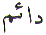
The One Who Exists Forever. In the name Muhammad
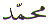 , it
comes last. Whereas the letter Meem ()
is the last letter in the Name Daiem
and it is the first letter in the name Muhammad
, it
comes last. Whereas the letter Meem ()
is the last letter in the Name Daiem
and it is the first letter in the name Muhammad
 . In the name Adam 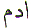 () the
letter Dal () is the middle letter. In the
Abjad format, the letter Dal ()
is the fourth letter and given the value 4. In the normal Arabic
character set it is the 8th letter.
. In the name Adam 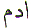 () the
letter Dal () is the middle letter. In the
Abjad format, the letter Dal ()
is the fourth letter and given the value 4. In the normal Arabic
character set it is the 8th letter.
The Arabic letter Dal
( ) is the first letter in the Attribute
Daiem, the last letter in the name Muhammad
 and the middle or centre letter
of the name Adam. What is the significance of the
letter Dal ( ) ? The letter Dal (
) represents a Dairah 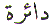.
A Dairah is a circle. Everything in existence is made of
circles. The sun, the moon, the planets, and the stars are circular.
They are all round. The orbits, of the planets, the orbits of
the galaxies are all Dairahs, circles. If we look at the
atoms, they are also circular. If we further look at our lives,
our patterns of existence, they are all circular. And also, we
come from Allah and to Allah is our return.
and the middle or centre letter
of the name Adam. What is the significance of the
letter Dal ( ) ? The letter Dal (
) represents a Dairah 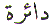.
A Dairah is a circle. Everything in existence is made of
circles. The sun, the moon, the planets, and the stars are circular.
They are all round. The orbits, of the planets, the orbits of
the galaxies are all Dairahs, circles. If we look at the
atoms, they are also circular. If we further look at our lives,
our patterns of existence, they are all circular. And also, we
come from Allah and to Allah is our return.
Even this is a complete Dairah or circle or revolution for us.
A Dairah is a circle. A circle consists of 360 degrees. First, what are degrees? In Arabic they are Darajat or Ranks. Even in spiritual circles (if you will pardon the pun) there are 360 degrees or ranks. Darajat (degrees) are grades. Darajat are ranks.
Why is it 360 degrees or grades or ranks? Why not 300 degrees or 400 degrees? Since 360 is nearer to 400 than it is to 300, there is something interesting about that! 360 is 40 less than 400.
Can we say it is Meem () less than 400? In other words, Has the numerical value of Meem been multiplied 10 times (40 x 10 = 400) and then the value of ONE Meem been taken away (400 - 40) to arrive at 360? Since the numerical value of the letter Meem () is 40. The other interesting point about all this is that the numerical value of the letter Meem () is 10 times the numerical value of the letter Dal ( ).
Where did the letter Meem come into all this?
There are 40 Maqaams (stations) in the spiritual journey. And what is the spiritual journey? It is the search for Allah in this world. That is what Musa () went through on the Mount Tur for 40 (Meem) days. That is where the letter Meem () or 40 comes from in this case. Like it or not, there is no avenue open without the letter Meem (). More will be said about the missing 40 Darajat or ranks at the end of this article...
Coming back to the Dairah (circle), as the number of degrees in a circle (360) are 40 less than 400, let us take Meem, or 40, as our starting point. If we divide 360 by 40:
we get a perfect 9 without any remainder or fraction. Or looking at it another way:
We took a circle 360, divided it by 40 and ended with 9. The letter with the numerical value of 9 is Toin ().
We have the STARTING letter Meem () and the ENDING letter Toin ().
Everything we see in this world is a living thing. Everything is created out of atoms. Whether it is an animal, plant or even a stone. Each thing is created out of atoms. Every atom has electrons circulating the nucleus. The only difference is the bonding energy between the atoms. We can pinch and deform the human skin. Pinching a stone has no marked effect. Nevertheless, everything with electrons has the gift of life from Allah. This gift comes from the Attribute Hayy 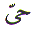from Allah. Hayy is spelt Ha () and Ya (). This gift from Allah is IN everything. Only, we do not perceive it.
If we now place this Attribute IN the middle of Meem () and Toin () we arrive at Muheet 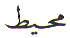. The One who Encompasses everything. The One who surrounds everything. The One who gives life to everything. This is an analogy. All created things are limited. Dairahs. Circles. Allah on the other hand is Unlimited. Everything is within His grasp or His control. There is no escape for anyone or anything from Allah.
Dairahs, circles are limitations. The limitation is not just our physical size. This limitation is also our earthly lifespan. This limitation is also our mental aptitude. This limitation is existence with respect to time and place. Everything is limited in every way possible. Only Allah is Unlimited. What about The Unlimited?
Allah on the other hand is not limited by physical size. Direction does not apply to Allah. Allah is not limited by time or place or condition. None of these can be applied to Allah. He is ‘above' all these. By ‘above' it is implied that Allah is not restricted in any way or condition or circumstance or time or place. Since Allah is beyond a Dairah how do we understand Him?
If we go back to the Dairah (circle), we again have 360 Darajat (or degrees). Divide that by the numerical value of the letter Dal ( ) which has the numerical value 4. Since the word Dairah starts with the letter Dal ( ).
The result above is 90 which is the numerical value of the letter Saad (). The letter Saad () when written as pronounced gives us the WORD:
Saad ( ). We started with
letter Dal ( ) and
we ended up with the letter Dal ( ) in
the word Saad . There is a clue here. The Attribute
Daiem starts
with the letter Dal ( ).
and name Muhammad  ends with the letter Dal ( ).
Since we are looking for CIRCULAR patterns, Daiem
ends with
the letter Meem () and
the name Muhammad
ends with the letter Dal ( ).
Since we are looking for CIRCULAR patterns, Daiem
ends with
the letter Meem () and
the name Muhammad  begins
with the letter Meem (). Remember? There
is no avenue open without Meem ()! Since the letter Dal ( ) and the letter
Meem () are either at
the beginning or the end in the names Daiem
and Muhammad
begins
with the letter Meem (). Remember? There
is no avenue open without Meem ()! Since the letter Dal ( ) and the letter
Meem () are either at
the beginning or the end in the names Daiem
and Muhammad  . We
have just derived the letter Saad () .
The letter Dal ( ) was
the starting point to arrive at the letter Saad () . Therefore, let us replace the letter Alif ( ) in the word
Saad (
) with the letter
Meem (). We arrive
at the word Samad ( ). This Attribute,
Samad means Eternal. Without beginning
without end. Without any limitation. Allah the Eternal, the Unlimited.
. We
have just derived the letter Saad () .
The letter Dal ( ) was
the starting point to arrive at the letter Saad () . Therefore, let us replace the letter Alif ( ) in the word
Saad (
) with the letter
Meem (). We arrive
at the word Samad ( ). This Attribute,
Samad means Eternal. Without beginning
without end. Without any limitation. Allah the Eternal, the Unlimited.
Alternative, since Allah is Muheet the One who surrounds, let us replace the letter Alif ( ) in the word Saad ( ) with the first letter of Muheet - Meem ( ). Again we arrive at Allah's Attribute Samad. The One who is not limited by time or place or condition. We started with a limitation and arrived at the Unlimited.
Dunya 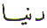, the world, our world is made up of four general elements. The numerical value of the letter Dal ( ) is also 4. These elements are Fire, Earth, Water and Air. These four general elements are derived from the combination of the rest of the elements that are in existence in this world . The Earth that we live on, rotates around its own axis one complete revolution per day. This one complete revolution per day of the Earth (which is also a Dairah ) "drawing" a Dairah takes 24 hours. To determine the time taken by the Earth to turn just one degree on its axis is: 24 / 360
For the Earth to revolve 1 degree on its own axis is 4 minutes which is the numerical value of the letter Dal ( ). So, what is this place called Dunya?
Dunya is basically a place of limitations. Dunya is where everything is a Dairah (Dal - ). It is a place where we must seek the Noor or Light (Noon - ) of the Knowledge (Ya - ) before returning to Allah (Alif - ) in the Akhirah (afterlife). How do we find this Light?
The Light is Deen 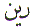. Deen
is religion. Our religion is Islam. Deen
(religion) and Dunya (world) are inter related. Deen takes precedence over Dunya
when we have already arrived in this Dunya
(world). Dunya is the place to practice Deen.
Deen is a circle as well. We have to
repeat the same patterns per day, per month, per year. And the
Islamic months and years are based on the circular patterns of
the Moon. The word Deen is basically following the Dairah (Dal - ), Circle
or pattern . Learning the knowledge (Ya - ) and following the Light (Noon -
). In our case, the Light is Quran
and Sunnah. And we have inherited the Light which is the Quran
and the Sunnah from the Last Nabee (Messenger) Muhammad  .
Darood (Blessings) and Salaam (peace) on Muhammad
.
Darood (Blessings) and Salaam (peace) on Muhammad  .
.
The word Darood 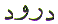starts with the
letter Dal ( ) and
ends with the letter Dal ( ).
What is Darood? Darood is sending Blessings on Muhammad  .
There are many different Darood. Each one is precious in its own right. Saying the
Darood brings Allah's pleasure on the
one who is sending blessings on Allah's Beloved. Saying the Darood brings assistance from Allah in times of need.
Saying the Darood brings the vision of Muhammad
.
There are many different Darood. Each one is precious in its own right. Saying the
Darood brings Allah's pleasure on the
one who is sending blessings on Allah's Beloved. Saying the Darood brings assistance from Allah in times of need.
Saying the Darood brings the vision of Muhammad  in a dream. And whoever has seen Muhammad
in a dream. And whoever has seen Muhammad
 in a dream, has really seen him.
Shaytan (Satan) cannot take the form of Muhammad
in a dream, has really seen him.
Shaytan (Satan) cannot take the form of Muhammad  .
.
Whenever we do Zikr (meditation with the Name or Attribute of) Allah, we are advised by all pious people to start with Darood. At the end of Zikr Allah, Darood should be recited once again. Why? Why not just at the beginning or just the end?
Simple. We have to complete a circle. We have to form a Dairah. Not in the physical sense, but in the spiritual sense. How can that be true? Look at the Tasbih, or rosary or 'worry beads'. Do we not start at one end and complete a full circle? Even while we are doing Zikr Allah, we are forming circles. The Zikr Allah forms a Dairah ('ring') around the one doing Zikr. Shaytan (Satan) is kept outside this Dairah (circle).
Going back to the Darajat, degrees or ranks. What are these Darajat? If we go back to the position of the letter Dal ( ) in the normal Arabic character set, it is 8. Therefore let us look at Chapter 8 in the Quran and pick verse 4 for the numerical value of the letter Dal ( ) is 4. We find...
From this verse, it can be seen, that the believers have different grades before Allah. Not all believers have the same grade. The believers can be categorised in one of the 360 Darajat or degrees or ranks. Earlier on we did find that 360 was 40 or Meem () short of 400. Why are there only 360 degrees and not 400? The answer to this puzzle is in Chapter 40 of the Quran Majeed because we are Meem (- 40) less than 400.
Or to look at it at another way if we increase the numerical value of the letter Dal ( ) tenfold we have 4 x 10 = 40. You could say, we have Magnified the value by 10 which is the numerical value of the letter Ya - , which represents Knowledge.
Or to look at it in yet another way, the word Mu_minoon is used in the above verse instead of Muslimoon. There is no chapter with the name Muslim in the Quran! Furthermore, anyone who accepts the Message LA ILAHA ILL ALLAH MUHAMMADUR RASOOL ALLAH is a Muslim. Mu_min on the other hand is a Muslim whose belief or faith (Iman) is superior or unshakeable. Therefore the answer is in Chapter 40 which is named Mu_min.
From here it can be seen
why there are only 360 Darajat and not 400. The missing 40 have
been reserved for Muhammad  . Allah
and the angels shower blessings on the Nabee (Muhammad
. Allah
and the angels shower blessings on the Nabee (Muhammad  ).
).
Allah the Creator is
Rafi ud Darajat (The Exalter of Ranks) and the
Highest Rank or Darajat that He has created and Exalted
is Insan ul
Kamil (the Perfect
Man). Muhammad  is the INSAN UL KAMIL - The Perfect Man. No one attained that position before him. And no
one will attain that position after him.
is the INSAN UL KAMIL - The Perfect Man. No one attained that position before him. And no
one will attain that position after him.
But... where did 360 Degrees or Ranks or Darajat come from in the first place?
Where did the 360 degrees or Darajat come from? How was it decided to have 360 degrees or ranks?
We need to rephrase the last question and ask ourselves: "WHO decided it should be 360 degrees?
The answer to the last
question is: ALLAH decided it should be 360 degrees
and not 400. "
He taught Adam all the names " Allah
wanted to reserve the 40 for His Beloved, our Master, Muhammad
 .
.
Well, the last verse from the Quran:
clearly confirms there are 360 degrees, ranks, grades or Darajat.
Where? How?
The Attribute RAFI 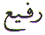is the answer!
Letter Ra - = 200
Letter Fa - = 80
Letter Ya - = 10
Letter Ayn - = 70
Add the numerical values of the above letters of the Attribute RAFI we have:
In a previous section of this article we looked at how our Earth rotates 1 degree in 4 minutes. If we divide 360 degrees with the above verse number we have:
We come back to the 24 hours in a day. The time taken by the Earth to revolve 360 degrees on its own axis.
Allahumma 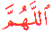
accept this humble effort. Raise Sayyidina Muhammad  to an even higher Darajat (Rank). Allahumma
Bless Muhammad
to an even higher Darajat (Rank). Allahumma
Bless Muhammad  , his family, his
household and his Companions. Allahumma
bestow Your knowledge on us. Knowledge that will benefit your
creation. Rabbi, You are Samee (All Hearing) un Baseer (All Seeing).
Ameen.
, his family, his
household and his Companions. Allahumma
bestow Your knowledge on us. Knowledge that will benefit your
creation. Rabbi, You are Samee (All Hearing) un Baseer (All Seeing).
Ameen.
| BACK |